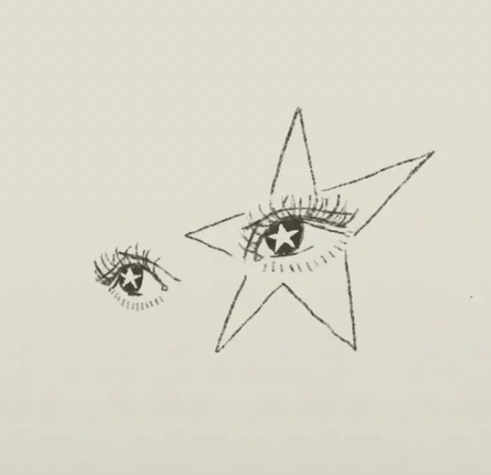
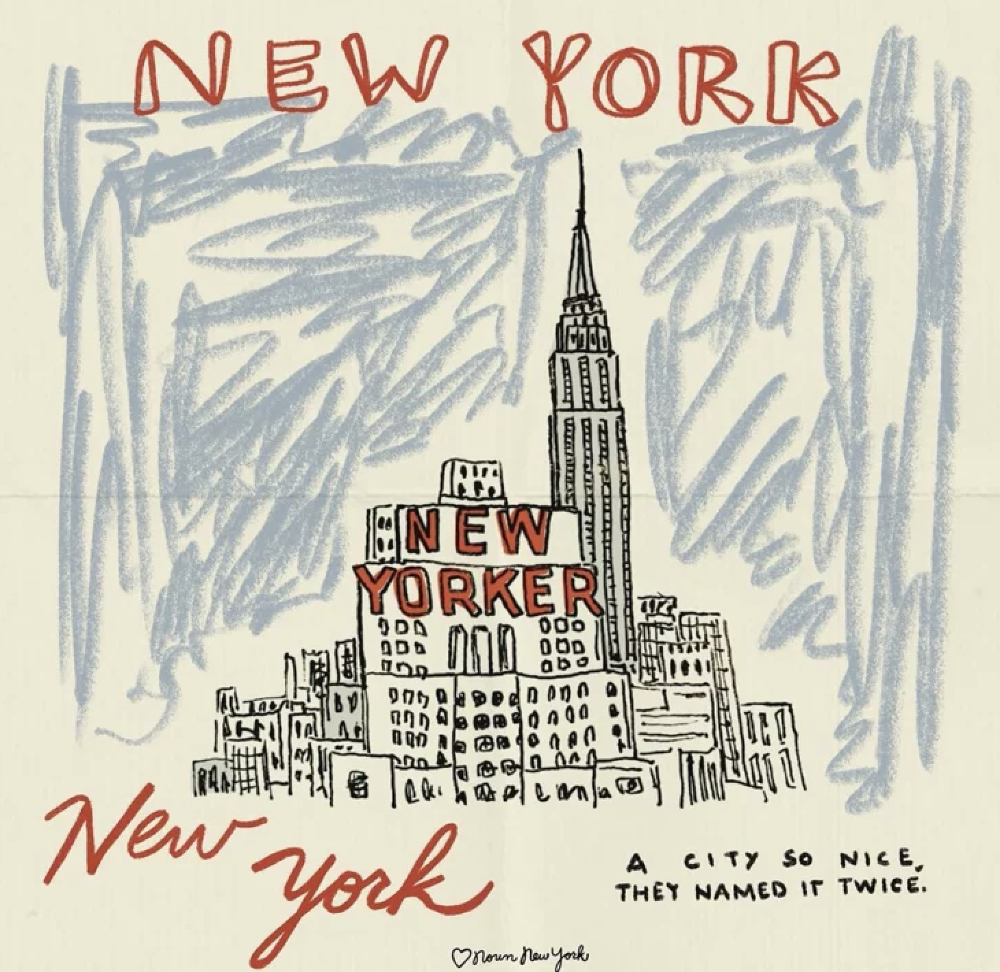
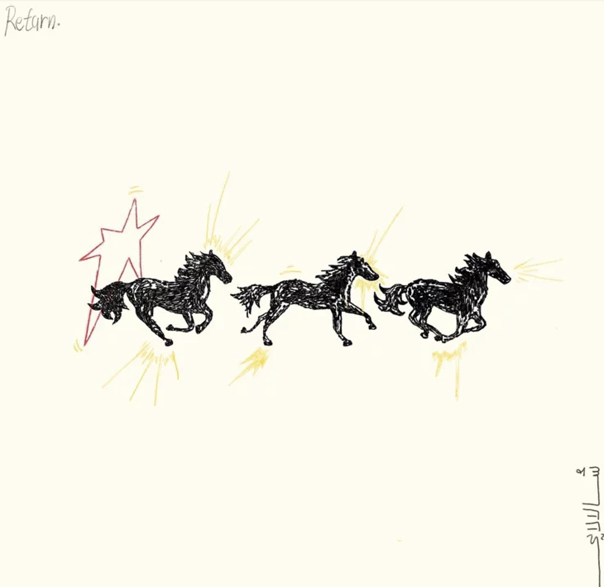

About Me
I enjoy visiting museums, painting, shopping, reading books, listening to music, horseback riding, and traveling the world. The purpose of my portfolio is to inform viewers of who I am, highlight the growth I have accomplished, and to showcase the work I am proud of. I feel that I have grown so much during my time in Computer Science and learned how to think outside of the box and how to bring my ideas to life.


